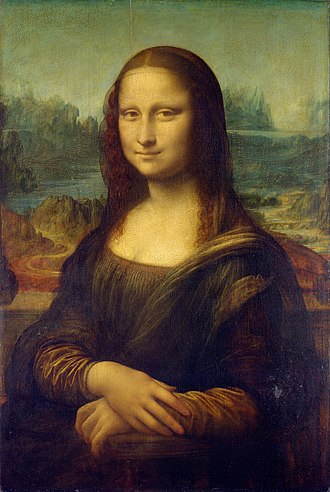
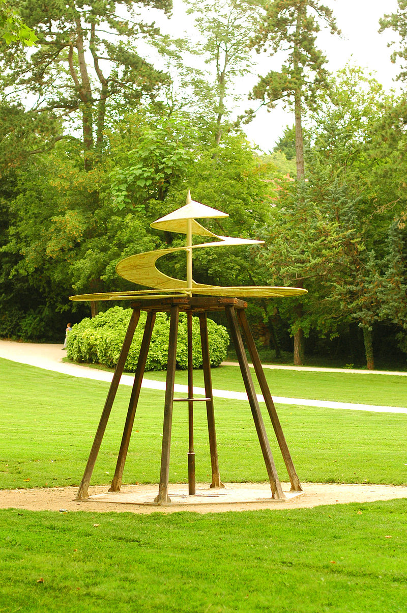

Леонардо да Винчи
Детство

Леонардо да Винчи родился 15 апреля 1452 года в селении Анкиано близ небольшого городка Винчи, недалеко от Флоренции в «три часа ночи» то есть в 22:30 по современному отсчёту времени[источник не указан 2416 дней]. Примечательна запись в дневнике деда Леонардо, Антонио да Винчи (1372—1468) (дословный перевод): «В субботу, в три часа ночи 15 апреля родился мой внук, сын моего сына Пьеро. Мальчика назвали Леонардо. Его крестил отец Пьеро ди Бартоломео». Его родителями были 25-летний нотариус Пьеро (1427—1504) и его возлюбленная, крестьянка Катерина. Первые годы жизни Леонардо провёл вместе с матерью. Его отец вскоре женился на богатой и знатной девушке, но этот брак оказался бездетным, и Пьеро забрал своего трёхлетнего сына на воспитание. Разлученный с матерью Леонардо всю жизнь пытался воссоздать её образ в своих шедеврах. Жил он в это время у деда. В итальянских семьях эпохи Ренессанса считалось обыденностью воспитание внебрачных детей наряду с законными отпрысками. Многие влиятельные люди города Винчи приняли участие в дальнейшей судьбе Леонардо. Когда Леонардо было 13 лет, его мачеха умерла при родах. Отец женился повторно — и вскоре снова остался вдовцом. Он прожил 77 лет, был четырежды женат и имел 12 детей. Отец пытался приобщить Леонардо к семейной профессии, но сын так и не заинтересовался юриспруденцией. Леонардо не имел фамилии в современном смысле; «да Винчи» означает просто «(родом) из городка Винчи». Полное его имя — итал. Leonardo di ser Piero da Vinci, то есть «Леонардо, сын господина Пьеро из Вчи».
Искусство
Нашим современникам Леонардо в первую очередь известен как художник. Кроме того, не исключено, что да Винчи мог быть и скульптором: исследователи из университета Перуджи — Джанкарло Джентилини и Карло Сиси — утверждают, что найденная ими в 1990 году терракотовая голова является единственной дошедшей до нас скульптурной работой Леонардо да Винчи[16]. Однако сам да Винчи в разные периоды своей жизни считал себя в первую очередь инженером или учёным. Он отдавал изобразительному искусству не очень много времени и работал достаточно медленно. Поэтому художественное наследие Леонардо количественно не велико, а ряд его работ утрачен или сильно повреждён. Однако его вклад в мировую художественную культуру является исключительно важным даже на фоне той когорты гениев, которую дало Итальянское Возрождение. Благодаря его работам искусство живописи перешло на качественно новый этап своего развития. Предшествующие Леонардо художники Ренессанса решительно отказывались от многих условностей средневекового искусства. Это было движение в сторону реализма и многое уже было достигнуто в изучении перспективы, анатомии, большей свободы в композиционных решениях. Но в плане живописности, работы с краской, художники были ещё достаточно условны и скованы. Линия на картине чётко очерчивала предмет, и изображение имело вид раскрашенного рисунка. Наиболее условным был пейзаж, который играл второстепенную роль. Леонардо осознал и воплотил новую живописную технику. У него линия имеет право на размытость, потому что так мы её видим. Он осознал явления рассеяния света в воздухе и возникновения сфумато — дымки между зрителем и изображённым предметом, которая смягчает цветовые контрасты и линии. В итоге реализм в живописи перешёл на качественно новую ступень.
После Леонардо
В 1485 году, после страшной эпидемии чумы в Милане, Леонардо предложил властям проект идеального города с определёнными параметрами, планировкой и канализационной системой. Миланский герцог Лодовико Сфорца отклонил проект. В современной Норвегии находится действующий мост, созданный по проекту Леонардо да Винчи. В римском аэропорту, носящем имя Леонардо да Винчи, установлена исполинская, уходящая в небо статуя учёного с моделью вертолёта в руках. «Не оборачивается тот, кто устремлён к звезде», — писал Леонардо.